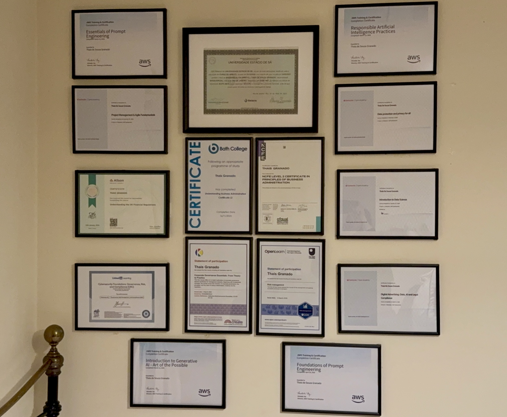

For me, learning has never been about collecting certificates. It is about building clarity, improving how I think and how I make decisions.
As someone building a career in a new country, I take learning seriously. I want to understand the environment I am part of, the standards, the expectations and how things work in practice.
Each course represents more than completion. It represents a shift in perspective, a new layer of understanding and a step towards being fully prepared to operate in complex and regulated environments.
This is a visual representation of consistency. Behind each certificate, there is time, discipline and reflection.

This is my personal learning space. Each certificate represents a stage of development, not an end point.
This is where I built my foundation. Law taught me structure, responsibility and the real impact of decisions on people's lives.
Expanded my perspective into organisational environments, operations and how decisions are implemented beyond theory.
Reinforced my understanding that governance is not abstract. It is about accountability, documentation and trust.
Strengthened my view that data is directly linked to people, rights and risk. Privacy is a governance responsibility.
Developed understanding of regulated environments, compliance structures and financial systems in the UK.
Focused on how data quality, bias and decision-making affect AI systems and real-world outcomes.
I do not see learning as accumulation. I see it as preparation.
The more I understand, the more confident I become in how I think, how I work and how I contribute.
For me, this is not about certificates. It is about building the level of clarity and responsibility required to operate in environments where decisions matter.